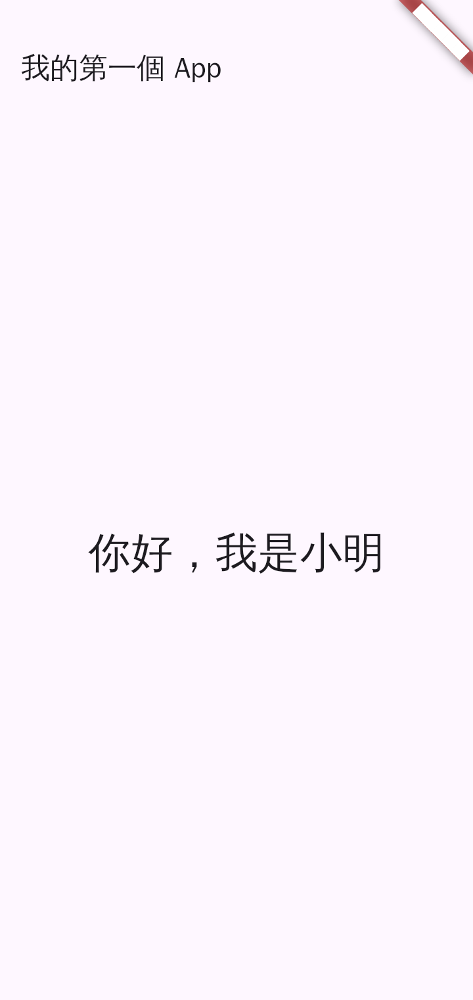

1
把字放大
在 Text 的文字後面加一個逗號，再加上 style: TextStyle(fontSize: 32)。fontSize 的單位是「邏輯像素」，數字越大字越大。
import 'package:flutter/material.dart';
void main() {
runApp(
MaterialApp(
home: Scaffold(
appBar: AppBar(
title: Text('我的第一個 App'),
),
body: Center(
child: Text(
'你好，我是小明',
⟦style: TextStyle(fontSize: 32),⟧
),
),
),
),
);
}卡住了？看這裡
fontSize 寫成 '32'（有引號）就變成字串了，會出錯。數字不要加引號。
The argument type 'String' can't be assigned to the parameter type 'double?'.

字變大了